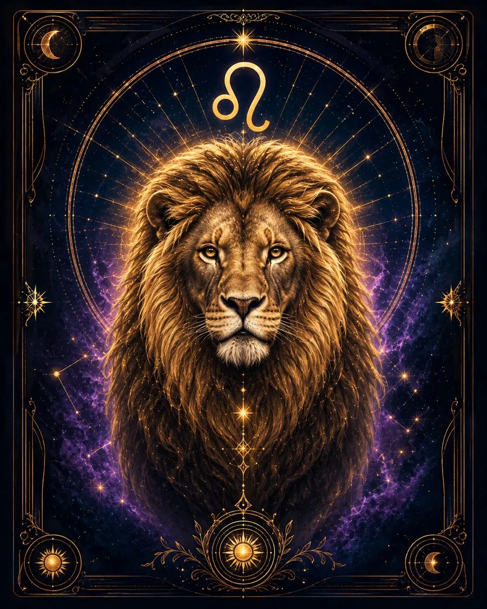

In brief
‘I want to express myself.’
What this person is like
Leo needs to put themselves into what they do and feel that their presence matters. They seek vivid self-expression, creativity, leadership, and recognition. This does not always mean a literal stage, but it nearly always means a need to see the result of their own influence.
What drives them
Self-realization and respect. It is important for them to be proud of themselves.
Strengths
Creativity, confidence, generosity, leadership, magnanimity, and an ability to inspire and support others.
Weaknesses
Pride, a painful response to being disregarded, a need for praise, and dramatizing situations.
In relationships
They love vividly and generously, want to be proud of their partner, and need to feel respected.
At work and with money
They do well where they can create, lead, perform, organize, or take personal responsibility.
When things go wrong
They begin to fight for attention and experience criticism as a blow to their dignity.
Main inner conflict
They want to be self-sufficient but often depend on other people’s response more than they are ready to admit.
This is a general description of a Sun sign, not a complete portrait of a person. In an actual natal chart, character depends on the Sun and other factors. Astrology is a symbolic tradition, not a scientifically established prediction; it is not a diagnosis or financial advice.